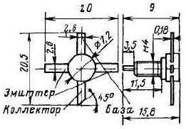
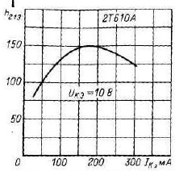
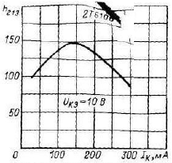
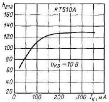
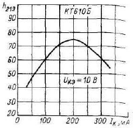
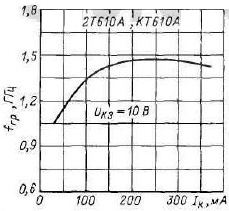
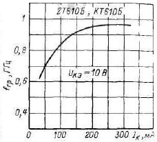
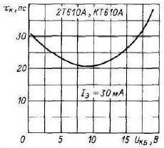
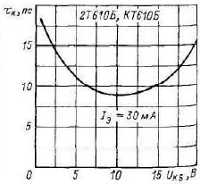

Транзистор биполярный средней мощности сверхвысокочастотный 2Т610 (А, Б), КТ610 (А, Б)
Транзисторы кремниевые эпитаксиально-планарные структуры n-p-n усилительные. Предназначены для применения в усилителях напряжения и мощности. Выпускаются в металлокерамическом корпусе с гибкими полосковыми выводами. Тип прибора указывается на корпусе.
Масса транзистора не более 2 г.

Электрические параметры
|
Статический коэффициент передачи тока в схеме с общим эмиттером при UКБ = 10 В, IЭ = 150 мА |
|
| 2Т610А | 50 ... 250 |
| 2Т610Б | 50 ... 250 |
| КТ610А | 50 ... 300 |
| КТ610Б | 20 ... 300 |
| Неравномерность коэффициента передачи тока в схеме с общим эмиттером в режиме малого сигнала при UКЭ = 10 В, IК = 30 ... 270 мА для 2Т610А, КТ610А, не более | 2.3 |
| Граничная частота коэффициента передачи тока в схеме с общим эмиттером при UКЭ = 10 В, IК = 150 мА | |
| 2Т610А, КТ610А, не менее | 1000 МГц |
| типовое значение | 1250 МГц |
| 2Т610Б, КТ610Б, не менее | 700 МГц |
| типовое значение | 1100 МГц |
| Коэффициент усиления по мощности (медианное значение) при UКЭ = 12.6 В, PВЫХ = 1 Вт, f = 400 МГц для 2Т610Б | |
| не менее | 6.4 дБ |
| типовое значение | 8* дБ |
| Коэффициент полезного действия коллектора (медианное значение) при UКЭ = 12.6 В, PВЫХ = 1 Вт, f = 400 МГц для 2Т610Б, не менее | 45 % |
| Постоянная времени цепи обратной связи на высокой частоте при UКБ = 10 В, IЭ = 30 мА, f = 30 МГц | |
| 2Т610А, не более | 35 пс |
| типовое значение | 20* пс |
| 2Т610Б, не более | 18 пс |
| типовое значение | 7.5* пс |
| КТ610 А, не более | 55 пс |
| КТ610Б, не более | 22 пс |
| Емкость коллекторного перехода при UКБ = 10 В, не более | 4.1 пФ |
| Емкость эмиттерного перехода при UЭБ = 0 В, не более | 21 пФ |
| Граничное напряжение при IЭ = 30 мА, не менее | 20 В |
| типовое значение | 24* В |
| Обратный ток коллектора при UКБО = 20 В, не более | |
| 2Т610А, 2Т610 Б при T = -60 ... +25 0C и КТ610А, КТ610Б при T = -45 ... +25 0C | 0.5 мА |
| 2Т610А, 2Т610 Б при T = +125 0C и КТ610А, КТ610Б при T = +85 0C | 1.5 мА |
| Обратный ток эмиттера при UЭБО = 4 В, не более | |
| 2Т610А, 2Т610 Б при T = -60 ... +25 0C и КТ610А, КТ610Б при T = -45 ... +25 0C | 0.1 мА |
| 2Т610А, 2Т610 Б при T = +125 0C и КТ610А, КТ610Б при T = +85 0C | 0.5 мА |
| Коэффициент шума при f = 2 ... 200 МГц, IК = 30 мА, RГ = 75 Ом, типовое значение | 6* дБ |
| Индуктивность эмиттерного вывода (при использовании двух выводов) | 0.6 нГн |
| Индуктивность коллекторного вывода | 2.38 нГн |
Предельные эксплуатационные данные
| Постоянное напряжение коллектор-эмиттер при RЭБ = 100 Ом | 26 В |
| Постоянное напряжение коллектор-база | 26 В |
| Постоянное напряжение эмиттер-база | 4 В |
| Постоянный ток коллектора | 0.3 А |
| Постоянная рассеиваемая мощность коллектора | |
| при TК = +50 0C | 1.5 Вт |
| при TК = +85 0C | 1 Вт |
| Температура p-n перехода | +150 0C |
| Температура окружающей среды | |
| 2Т610А, 2Т610Б | -60 0C ... TК = +125 0C |
| КТ610А, КТ610Б | -45 0C ... TК = +85 0C |
Примечание
*) Звездочкой отмечены параметры или их значения, приведенные в справочных данных ТУ. При производстве полупроводниковых приборов они могут не контролироваться.
Пайка выводов транзисторов допускается при температуре не выше +150 0C.
Изгиб выводов допускается не ближе 3 мм от корпуса транзистора с радиусом не менее 1.5 мм.
Допустимое значение статического потенциала 1000 В.
Дополнительные характеристики

Рис. 1. Зависимость статического коэффициента передачи тока от тока коллектора (2Т610А).

Рис. 2. Зависимость статического коэффициента передачи тока от тока коллектора (2Т610Б).

Рис. 3. Зависимость статического коэффициента передачи тока от тока коллектора (КТ610А).

Рис. 4. Зависимость статического коэффициента передачи тока от тока коллектора (КТ610Б).

Рис. 5. Зависимость граничной частоты от тока коллектора (2Т610А, КТ610А).

Рис. 6. Зависимость граничной частоты от тока коллектора (2Т610Б, КТ610Б).

Рис. 7. Зависимость постоянной времени цепи обратной связи от напряжения коллектор-база (2Т610А, КТ610А).

Рис. 8. Зависимость постоянной времени цепи обратной связи от напряжения коллектор-база (2Т610Б, КТ610Б).
Ссылки:
28.09.2019
Альтернативные источники
энергии
Компьютеры и
Интернет
Магнитные поля
Механотронные системы
Перспективные
разработки
Электроника и технология